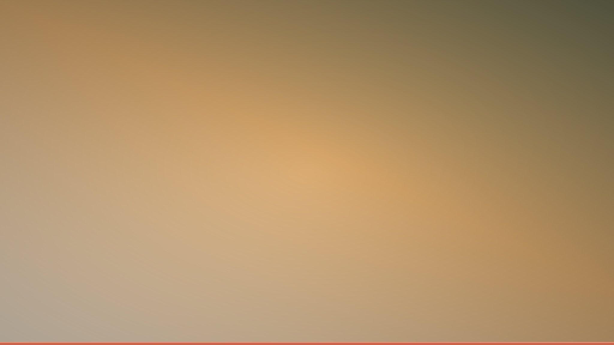

Каждая вторая собака хотя бы иногда ест траву на прогулке. Хозяева реагируют по-разному: одни спокойно ждут, другие в панике вытаскивают стебли изо рта. В большинстве случаев поедание травы — нормальное поведение с несколькими объяснениями. Но есть ситуации, когда это стоит ограничить — и конкретные места, где траве точно нельзя попадать в рот.
Исследование 2008 года (Sueda, Hart, Cliff) показало: из 49 собак, которые ели траву, у 68% не было никаких признаков недомогания до начала поедания, а рвота после происходила лишь в 22% случаев — вопреки распространённому мифу «собака ест траву, чтобы вырвать».
Поедание растений у псовых фиксировалось у диких волков, шакалов и лисиц — это часть нормального поведенческого репертуара. Специального эволюционного механизма «есть траву только при плохом самочувствии» у собак нет.
Прогулка — сенсорная среда. Запахи, текстуры, движение. Часть собак жуёт траву просто потому, что это интересно — новая текстура, запах, вкус. Особенно часто это проявляется у молодых и активных собак в начале прогулки, пока им ещё не наиграли.
Признак «скукового» жевания: собака берёт траву мимоходом, без остановки и особого интереса, и быстро переключается на что-то другое. Это поведение снижается, если прогулка более насыщенная: нюхательные игры, занятия, свободный бег.
🐾 Питомец ведёт себя странно?
AnimaLife расшифрует поведение кошки и собаки и подскажет, что делать. Попробуйте бесплатно прямо в мессенджере.
Трава — источник нерастворимой клетчатки, которой в коммерческих кормах (особенно в мясных монопродуктах или консервах) может быть недостаточно. Клетчатка нужна для нормальной работы кишечника.
Если собака систематически ест траву — это повод проверить состав рациона на содержание клетчатки. Источники клетчатки в корме: тыква, морковь, свёкла, зелёные овощи, цельнозерновые. Если рацион сбалансирован, тяга к траве у таких собак обычно снижается.
Часть собак действительно ест траву при лёгком дискомфорте в пищеварительном тракте. Трава раздражает стенки желудка и провоцирует рвоту — и собаке после этого может стать лучше.
Отличительные признаки «медицинского» жевания:
Если такое поведение повторяется регулярно — это повод для планового осмотра: может быть повод проверить желудок или кишечник.
Некоторые собаки просто любят вкус молодой свежей травы — особенно весной и в начале лета, когда она сочная и чуть сладковатая. Это не патология и не сигнал. Это предпочтение, такое же как у некоторых собак есть снег зимой.
Вкусовые предпочтения формируются в щенячестве. Если щенок попробовал траву и ему понравилось — эта привычка может остаться на всю жизнь.
Предки собак — всеядные хищники. В желудках волков регулярно находят растительный материал из содержимого желудков добычи. Поедание растений — не исключение в поведенческой программе, а её часть.
Некоторые исследователи считают, что собаки используют траву как «природную добавку» — источник хлорофилла, витаминов, горечей. Механизм этого инстинкта изучен слабо, но само явление фиксируется повсеместно.
Поведение стоит ограничить в нескольких ситуациях:
🐾 Здоровье питомца под контролем
AI-ветеринар, дневник здоровья и персональные советы для вашего питомца — установите AnimaLife бесплатно.
🐾 Понравился разбор?
Подпишитесь на канал — каждый день разбираем по одному тревожному симптому у кошек и собак: что в пределах нормы, а когда пора к врачу. Подпишитесь, чтобы не пропустить разбор, который может спасти здоровье вашего питомца.
Собака ест траву — в большинстве случаев это нормально. Скука, клетчатка, вкус, лёгкий дискомфорт в животе, атавистическая программа — все эти причины не требуют лечения, только понимания. Главное ограничение — места, где трава обработана химически. О безопасности на прогулке в целом — в статье про ядовитые растения на даче.